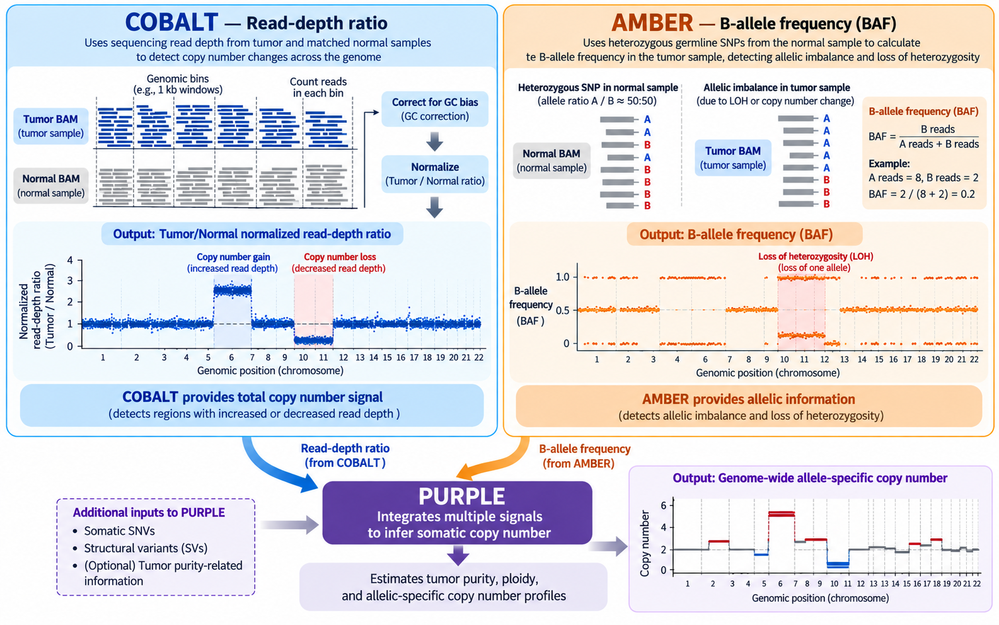
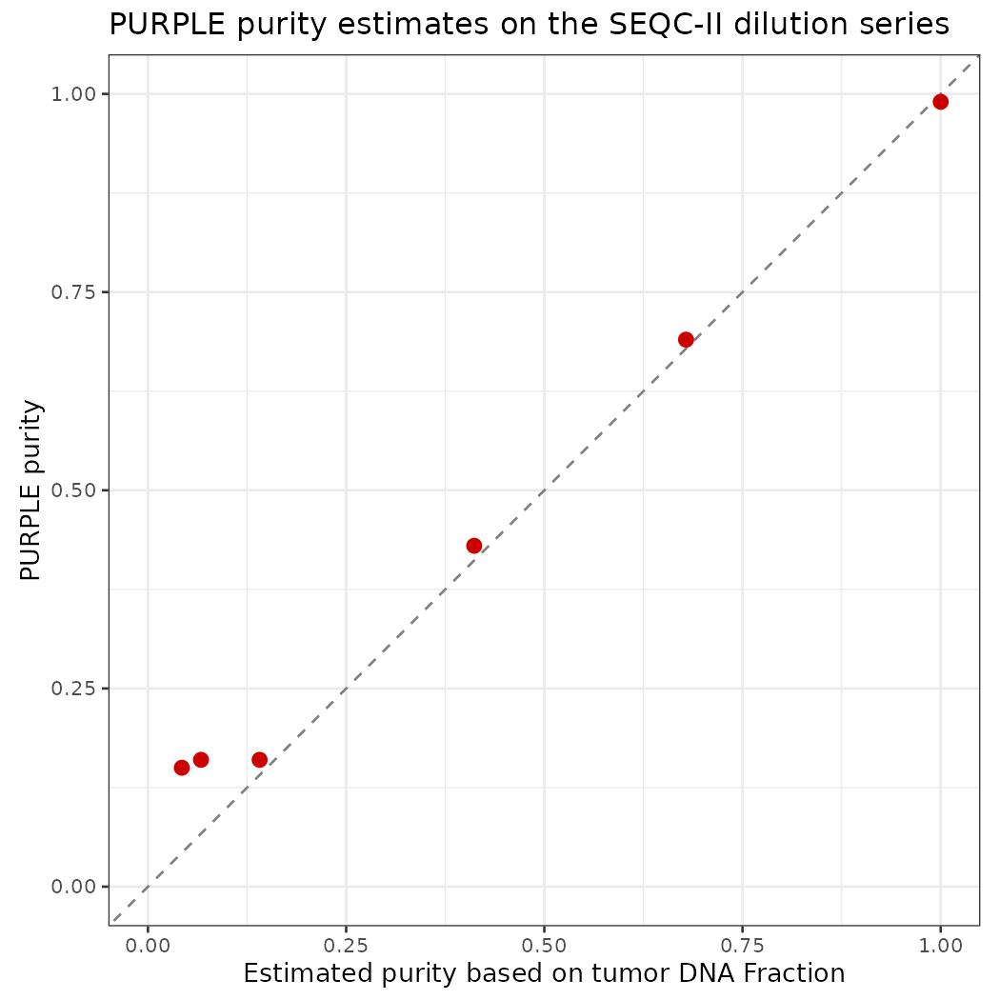

Run cobalt , amber , purple
PURPLE (Hartwig Medical Foundation, part of hmftools) estimates tumor purity, ploidy and allele-specific copy number from two independent signals:
| Tool | Signal | Why it matters |
|---|---|---|
| AMBER | B-allele frequency (BAF) at germline heterozygous SNPs | A het SNP has BAF = 0.5 in the normal. In tumor regions with allelic imbalance (LOH, gains of one allele) the BAF moves away from 0.5, and how far it moves depends on purity. |
| COBALT | Read-depth ratio tumor / normal in 1 kb windows, GC-corrected | Depth is proportional to total copy number, diluted by the normal cells. |
| PURPLE | Combines BAF + depth ratio | Searches the purity/ploidy combinations that best explain both signals together, then gives a copy number and minor/major allele copy number for every segment. |

We ran the jobs on the Alliance cluster Rorqual. AMBER and COBALT require WGS BAM files and are computationally resource-intensive, so they cannot be run on our current cloud instance. However, we can review the code to understand how these tools work, including their inputs and outputs. We can then run PURPLE on the current instance using the results generated by AMBER and COBALT.
1. COBALT: read-depth ratios
# parameter
HMF=/cvmfs/ref.mugqic/genomes/hmftools/hmf_pipeline_resources.38_v5.31
COBALT_JAR='#path to cobalt tool'
JAVA_MEM=48G
THREADS=8
GC=$HMF/copy_number/GC_profile.1000bp.38.cnp # COBALT + PURPLE
NORMAL_ID=SPP_GT_0-1_1
TUMOR_ID=SPP_GT_1-0_1
# Run
java -Xmx${JAVA_MEM} -jar $COBALT_JAR \
-reference $NORMAL_ID \
-reference_bam data/NCBI_SEQCII_SPP/${NORMAL_ID}.bwa.dedup.bam \
-tumor $TUMOR_ID \
-tumor_bam data/NCBI_SEQCII_SPP/${TUMOR_ID}.bwa.dedup.bam \
-gc_profile $GC \
-threads $THREADS \
-output_dir results/cobalt/$TUMOR_ID| Parameter | Meaning |
|---|---|
-reference, -reference_bam |
Normal sample ID and BAM. The normal is used for its own depth profile, to detect germline copy-number changes and the sex of the individual. |
-tumor, -tumor_bam |
Tumor sample ID and BAM |
-gc_profile |
1 kb GC/mappability profile. COBALT counts reads in each 1 kb window and divides by the median depth of windows with the same GC content, so GC bias is removed. |
-threads, -output_dir |
As for AMBER |
Optional: -pcf_gamma (segmentation penalty; higher gives fewer, longer segments), -tumor_only_diploid_bed (tumor-only mode: regions assumed diploid instead of a normal).
Outputs (Mathieu_purple/cobalt/<tumor>/):
| File | Content |
|---|---|
<tumor>.cobalt.ratio.tsv.gz |
One row per 1 kb window: read depths, tumorGCRatio, referenceGCRatio, referenceGCDiploidRatio. -1 = window not usable (low mappability, extreme GC). |
<tumor>.cobalt.ratio.pcf |
Segments of the tumor ratio; the mean column is log2 |
<normal>.cobalt.ratio.pcf |
Segments of the normal ratio |
<normal>.cobalt.ratio.median.tsv |
Median normal ratio per chromosome. ~1.0 = two copies; ~0.5 = one copy. |
<sample>.cobalt.gc.median.tsv |
Median depth per GC bucket (the GC correction curve) |
2. AMBER: B-allele frequencies
# Parameters
HMF=/cvmfs/ref.mugqic/genomes/hmftools/hmf_pipeline_resources.38_v5.31
AMBER_JAR='#path to amber tool'
HET_LOCI=$HMF/copy_number/GermlineHetPon.38.vcf.gz # AMBER
GENOME_VERSION=38
THREADS=8
JAVA_MEM=48G
NORMAL_ID=SPP_GT_0-1_1
TUMOR_ID=SPP_GT_1-0_1
# Run
java -Xmx${JAVA_MEM} -jar $AMBER_JAR \
-reference $NORMAL_ID \
-reference_bam data/NCBI_SEQCII_SPP/${NORMAL_ID}.bwa.dedup.bam \
-tumor $TUMOR_ID \
-tumor_bam data/NCBI_SEQCII_SPP/${TUMOR_ID}.bwa.dedup.bam \
-loci $HET_LOCI \
-ref_genome_version $GENOME_VERSION \
-threads $THREADS \
-output_dir results/amber/$TUMOR_ID| Parameter | Meaning |
|---|---|
-reference |
Sample ID of the normal. hmftools call the matched normal the “reference”. |
-reference_bam |
BAM of the normal; used to find the SNPs that are heterozygous in this individual |
-tumor |
Sample ID of the tumor; used to name the output files |
-tumor_bam |
BAM of the tumor; BAF is measured at the normal’s het sites |
-loci |
Candidate SNP sites to check (GermlineHetPon) |
-ref_genome_version |
37 or 38; selects chromosome naming and built-in resources |
-threads |
Number of threads |
-output_dir |
Output folder (one per tumor) |
Useful optional parameters, kept at their defaults here: -min_mapping_quality, -min_base_quality and -tumor_min_depth (read filters); -tumor_only (no normal available).
Outputs (Mathieu_purple/amber/<tumor>/):
| File | Content |
|---|---|
<tumor>.amber.baf.tsv.gz |
One row per het site: tumorBAF, tumorModifiedBAF, tumorDepth, normalBAF, normalDepth |
<tumor>.amber.baf.pcf |
Segments of the tumor BAF (piecewise-constant fit) |
<tumor>.amber.qc |
QC: contamination, consanguinity, uniparental disomy |
<tumor>.amber.contamination.tsv |
Evidence for contamination (alt reads at sites homozygous in the normal) |
<normal>.amber.homozygousregion.tsv |
Long runs of homozygosity in the normal |
3. PURPLE: purity, ploidy and copy number
# parameters
PURPLE_JAR=~/CourseData/Module5/tools/purple_v4.0.1.jar
GENOME_VERSION=38
THREADS=3
JAVA_MEM=10G
cd ~/CourseData/Module5
GC=reference/GC_profile.1000bp.38.cnp
ENSEMBL=reference/ensembl_data
REF_GENOME=reference/Homo_sapiens.GRCh38.fa
# Tumors samples:
# SPP_GT_1-19_1; SPP_GT_1-9_1;SPP_GT_1-4_1; SPP_GT_1-1_1;SPP_GT_3-1_1; SPP_GT_1-0_1
NORMAL_ID=SPP_GT_0-1_1
TUMOR_ID=SPP_GT_1-0_1
# run
java -Xmx${JAVA_MEM} -jar $PURPLE_JAR \
-tumor $TUMOR_ID \
-gc_profile $GC \
-amber Mathieu_purple/amber/$TUMOR_ID \
-cobalt Mathieu_purple/cobalt/$TUMOR_ID \
-ensembl_data_dir $ENSEMBL \
-ref_genome $REF_GENOME \
-ref_genome_version $GENOME_VERSION \
-threads $THREADS \
-output_dir Mathieu_purple/purple_test/$TUMOR_ID| Parameter | Meaning |
|---|---|
-tumor |
Tumor sample ID; must match the AMBER/COBALT file names |
-amber |
Folder with the AMBER output for this tumor |
-cobalt |
Folder with the COBALT output for this tumor |
-gc_profile |
Same GC profile as COBALT |
-ensembl_data_dir |
Gene annotation, for the gene-level copy-number table |
-ref_genome, -ref_genome_version |
Reference FASTA and its version (38) |
-min_purity / -max_purity |
Range of purities PURPLE searches. The default minimum (0.08) would exclude our 5% sample, so it is lowered to 0.03. |
-threads, -output_dir |
As above |
Other important parameters, not used in this run:
| Parameter | Meaning |
|---|---|
-reference <normal ID> |
Name of the matched normal. Without it PURPLE runs in tumor-only mode (runMode = TUMOR in purity.tsv; the log shows reference(NONE)). For a paired analysis add -reference $NORMAL_ID. |
-somatic_vcf |
Somatic SNVs/indels, e.g. the Strelka2 or ensemble VCF from GenPipes. Their allele frequencies give a third, independent purity estimate, which helps most at low purity. |
-structural_vcf |
Structural variants (e.g. Manta/GRIDSS); breakpoints sharpen segment boundaries. |
-driver_gene_panel, -somatic_hotspots, -germline_hotspots |
Turn on the driver catalog. All three must be given together; PURPLE stops with “somatic_hotspots is a mandatory argument when running drivers” otherwise. |
-min_ploidy / -max_ploidy |
Range of ploidies to search (defaults 1 - 8) |
Outputs (Mathieu_purple/purple/):
| File | Content |
|---|---|
<tumor>.purple.purity.tsv |
Best fit: purity, ploidy, gender, wholeGenomeDuplication, status, plus the min/max of each estimate |
<tumor>.purple.purity.range.tsv |
Score of every purity/ploidy combination tested (shows how confident the fit is) |
<tumor>.purple.cnv.somatic.tsv |
Final copy-number segments: copyNumber, minorAlleleCopyNumber, majorAlleleCopyNumber, bafCount, depthWindowCount |
<tumor>.purple.cnv.gene.tsv |
Min/max copy number per gene, and the region with the lowest CN (minRegionStart/End) |
<tumor>.purple.segment.tsv |
Segments before smoothing, with the observed BAF / ratio and the fitted values |
<tumor>.purple.qc |
QC summary: status, contamination, gender from AMBER and COBALT, number of deleted genes |
plot/ |
Genome-wide plots: copynumber.png, segment.png, purity.range.png, … |
First look at the results: estimated vs. “true” purity
library(tidyverse)
# function to convert tumor DNA fraction to purity
tdf_to_purity <- function(tdf, ploidy = 2) {
2 * tdf / (ploidy * (1 - tdf) + 2 * tdf)
}
true_fraction <- tibble(
sample = c("SPP_GT_1-19_1", "SPP_GT_1-9_1", "SPP_GT_1-4_1",
"SPP_GT_1-1_1", "SPP_GT_3-1_1", "SPP_GT_1-0_1"),
true_fraction = c(0.05, 0.10, 0.20, 0.50, 0.75, 1.00))
purple_fit <- list.files("Mathieu_purple/purple", pattern = "purple.purity.tsv$",
full.names = TRUE) %>%
set_names(~ basename(.x) %>% str_remove(".purple.purity.tsv")) %>%
map_dfr(read_tsv, .id = "sample", show_col_types = FALSE) %>%
select(sample, purity, minPurity, maxPurity, ploidy, gender, runMode) %>%
left_join(., true_fraction, by = 'sample') %>%
mutate(., estimated_purity_from_fraction = tdf_to_purity(true_fraction, ploidy = ploidy) )
p <- ggplot(purple_fit, aes(estimated_purity_from_fraction, purity)) +
geom_abline(linetype = "dashed", colour = "grey50") +
# geom_errorbar(aes(ymin = minPurity, ymax = maxPurity), width = 0.02) +
geom_point(size = 3, colour = "red3") +
coord_equal(xlim = c(0, 1), ylim = c(0, 1)) +
labs(x = "Estimated purity based on tumor DNA Fraction", y = "PURPLE purity",
title = "PURPLE purity estimates on the SEQC-II dilution series") +
theme_bw(base_size = 13)
Summary
| Sample (BAM prefix) | Role | Tumor : Normal DNA | True Tumor DNA fraction | “True” Purity (estimated based on tDNA fraction) | Purity (estimated by PURPLE) |
|---|---|---|---|---|---|
| SPP_GT_0-1_1 | Normal | 0 : 1 | 0.00 | 0.00 | 0.00 |
| SPP_GT_1-19_1 | Tumor | 1 : 19 | 0.05 | 0.04 | 0.15 |
| SPP_GT_1-9_1 | Tumor | 1 : 9 | 0.10 | 0.07 | 0.16 |
| SPP_GT_1-4_1 | Tumor | 1 : 4 | 0.20 | 0.14 | 0.16 |
| SPP_GT_1-1_1 | Tumor | 1 : 1 | 0.50 | 0.41 | 0.43 |
| SPP_GT_3-1_1 | Tumor | 3 : 1 | 0.75 | 0.68 | 0.69 |
| SPP_GT_1-0_1 | Tumor | 1 : 0 | 1.00 | 1.00 | 0.99 |
Questions for discussion:
Down to which true purity does PURPLE estimate purity correctly? What happens below that, and why do the BAF and depth signals become hard to separate from noise?
The 100% tumor has
QCStatus FAIL_CONTAMINATION(AMBER contamination 0.85). Is this real contamination, or a consequence of this tumor/normal pair?